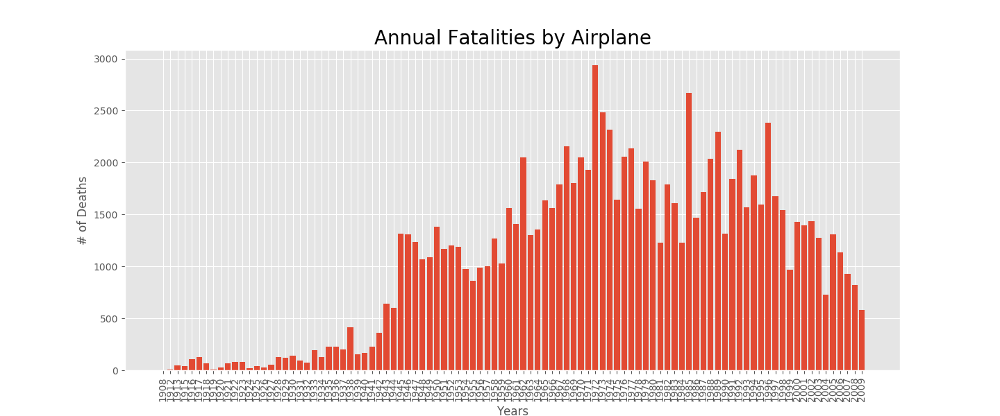
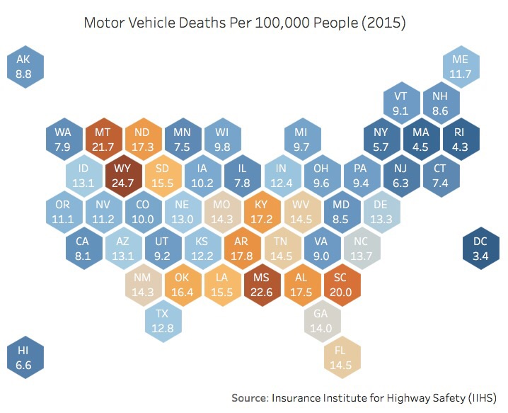
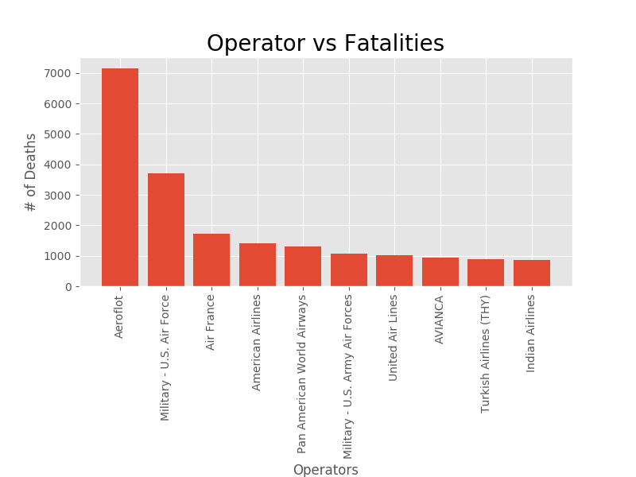
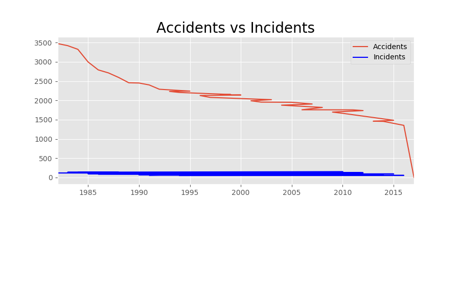

How is air travel safer than car travel?
Data taken in the last 100 years has trends that it is much safer than travelling by car. The graph below shows all fatal airplane crashes between 1908 and 2009.


From 1938 to 1972, aircraft fatalities skyrocketed due to wars and experimentation between airlines and aircraft companies. However, as new regulations were passed and the creation of the Federal Aviation Administration (FAA), the trend in fatalities in aviation has been on a steady decrease. The image following shows the average crash rate for passenger cars for 2015 per state. Car crash fatalities are much higher due to the varying models and shapes of cars that are on American roads.

The next statistic shows the number of fatalities reported by airlines. This graph also includes the military, yet in terms of commercial airlines, American airline operators are the safest when compared to Russia's Aeroloft Airline and Air France.

The final graph shows the general trend in airline accidents versus incidents reported to the FAA between 1985 and 2015. As it shows, Aircraft are much safer, security of the aircraft is much tighter and general regulations have been making airplanes much safer than ever before.